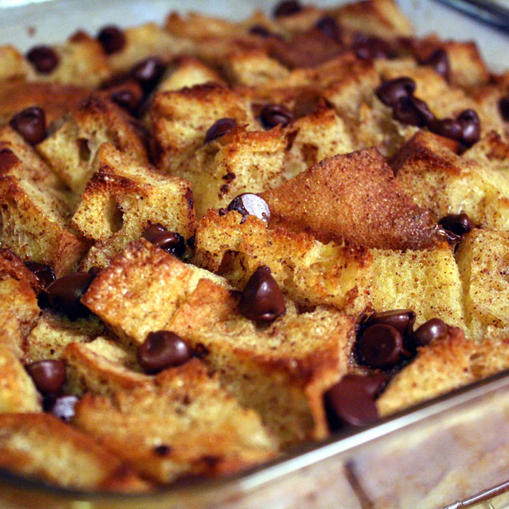

Bread Pudding

Description
Bread pudding is a dessert made with bread and custard to re-utilize
old bread. As a dish with a long history, no one knows for certain its
exact origin.
Any bread can be used for this recipe, but it is most commonly used with
bread that is slightly stale. The best breads used have the structure to withstand
a rich custard.
Ingredients
- 6 slices day-old bread, torn into small pieces
- 2 tablespoons unsalted butter, melted
- ½ cup raisins (Optional)
- 2 cups milk
- ¾ cup white sugar
- 4 large eggs, beaten
- 1 teaspoon ground cinnamon
- 1 teaspoon vanilla extract
Steps
- Preheat the oven to 350 degrees F (175 degrees C).
- Place bread pieces into an 8-inch square baking pan.
Drizzle melted butter over bread and sprinkle raisins over top.
- Whisk milk, sugar, eggs, cinnamon, and vanilla together in a medium mixing bowl until well combined.
Pour mixture over bread, and lightly push down with a fork until all bread is covered and soaking up the liquid.
- Bake in the preheated oven until golden brown and the top springs back when lightly pressed, about 45 minutes.